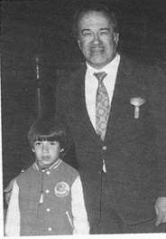

Глава 2
Перевод Александра Суменко для VSplanet.net
Маме было 40 лет, когда я появился на свет. Думаю, что мое рождение было приятным сюрпризом. Все всегда говорили, что я был последним усилием папы.

Я и мой отец (Эдди Герреро и Гори Герреро)
Если у тебя пожилые родители, ты вырастешь избалованным ребенком. Забавно: когда я заболевал в школе и за мной приезжали родители, медсестра сообщала:
— Эдди, твои бабушка с дедушкой приехали.
— Бабушка с дедушкой? У меня их нет. Это мои родители!
Будучи младшим ребенком, я был в какой-то степени маменькиным сынком. Меня все время пытались защитить от опасностей, я жил словно в пузыре. Особенно мне нравилось, когда меня носили на руках. Может, это давало мне ощущение защищенности, или я просто был ленивым, но для меня не было большего счастья, чем оказаться в руках родителей.
Даже в более старшем возрасте я любил, когда меня носили на руках. Мама носила меня в школу. Когда мы оказывались в квартале от школы, я говорил: «Опусти меня» — и убегал на занятия. Когда мама забирала меня из школы, мы проходили квартал, и, убедившись, что никто не видит, я говорил: «Ладно, теперь можешь взять меня на руки».
Также я был очень привязан к своей детской бутылке. Я пил только из нее до пяти лет. Наверное, можно сказать, что я всегда любил держать бутылку в руках; только со временем пиво пришло на смену молоку.
Я был счастливым и неугомонным малышом. Я был настолько диким, что считал себя Тарзаном. Я надевал свои плавки, брал одно из маминых полотенец для лица и засовывал его в трусы, словно я носил набедренную повязку. Я летал, держась за веревку, которую папа привязал к дереву в нашем дворе, и кричал, как Тарзан. Конечно, Тарзан не выжил бы без Читы, поэтому мама купила мне игрушечную обезьяну. Я любил эту игрушку и повсюду таскал ее с собой.
Герреро были гордой мексикано-американской семьей, где наследию обеих стран уделялось одинаковое внимание и почет. С отцом мы говорили по-английски, а с мамой — по-испански. Прибыв в Штаты впервые, мама не говорила по-английски, что было для нее большой проблемой. И она, и отец хотели, чтобы все их дети хорошо говорили на обоих языках.
Между детьми Герреро были большие временные промежутки. Линда старше меня на 7 лет, Эктор — на 13, Мандо — на 17, Чаво — на 19, а Куки — на 20.
Чаво женился спустя год после моего рождения. Потом в брак вступили Мандо, Эктор, Линда и, наконец, я. Куки жила с нами нерегулярно, а когда получила лицензию учителя, то вообще переехала в Лос-Анджелес.
Я был близок к Куки. Она защищала меня, как мама. Каждую субботу мы вдвоем ходили в кино. Мы доставали расписание местного кинотеатра, а потом планировали время, чтобы купить один билет, но посмотреть несколько фильмов. Иногда мы смотрели по 4 фильма в день.
Жить с взрослыми братьями и сестрами довольно необычно. Когда я был еще маленьким, у Чаво уже была своя семья. Более того, в то время он уже входил в десятку лучших рестлеров мира, поэтому он редко бывал дома. Он путешествовал по миру и вкалывал.
Хотя Чаво не проводил со мной много времени, я его боготворил. Я любил смотреть, как он выступает. И люблю до сих пор. Хотя порой вне ринга он ведет себя как абсолютный идиот.
Мне кажется, Чаво не относился ко мне так, как должно старшему брату. Он заставлял меня чувствовать себя неважным. Повзрослев, я понял, что внутри него кипит много гнева. Чаво злился на бизнес, потому что полагал, что мог бы сделать еще много после того, как его карьера достигла пика.
Он был зол на родителей, потому что папа был слишком строг с ним. Отец был твердым человеком, поборником строгой дисциплины, и мои братья испытывали это на себе в гораздо большей степени, чем я.
Я знаю, что мой отец любил своих детей. Просто он считал, что приносит пользу детям, что хороший отец — строгий отец. Но нельзя сказать, что у нас с ним не было счастливых воспоминаний. Отец любил играть и веселиться с нами. К сожалению, по-моему, в памяти моих братьев отложилось гораздо больше отрицательных событий, чем положительных. То же происходит и с моей памятью про Чаво — плохие воспоминания вытесняют хорошие.
Когда твой брат старше тебя на 19 лет, он практически становится вторым отцом. Отец значительно смягчился к моменту моего рождения. Он стал более дружелюбен, чем во времена, когда растил моих братьев. А Чаво так и остался жестким человеком.
Не поймите меня неправильно — я люблю Чаво. Он мой брат, и ничто не может победить братскую любовь. Что касается рестлинга, то я научился у Чаво большему, чем у кого-либо другого, если не считать отца. Он научил меня психологии, синхронности и необходимым основам. И я благодарен за это. Я бы не стал тем рестлером, которым являюсь, без его влияния.
Но в личном плане наши отношения оставляют желать лучшего. Чаво ведет себя, как отец, но он не заслужил права так разговаривать со мной. Как человек он не заслужил моего уважения.
Когда я рос, мне доставались различные прозвища от семьи. Родители звали меня Эвис, что, полагаю, является детским сокращением имени «Эдди». По правде говоря, я понятия не имею, откуда это взялось. Мама придумала короткие прозвища всем своим детям. Армандо стал Мандо, Эктор — Эко. Я был Эвисом. Почему-то я никогда не задумывался спросить почему. Просто меня все так называли.
Позже родители стали называть меня «Чилакил». Это прозвище произошло от мексиканского блюда «Chilaquiles». Оно похоже на энчилада с кукурузными чипсами, смешанными с острым мясом и соусом. Прозвище я получил от своего дяди из Мексики, который сказал, что я как чилакил — настоящая «заноза в заднице».
Округ Эль-Пасо, где проживала моя семья, был тесной общиной. Каждый присматривал друг за другом. Моими лучшими друзьями были соседи, жившие от нас через дорогу, — Джонни и Деннис Нила. Еще я часто играл с девочкой из соседнего дома Нормой Силва. Норма была классной девчонкой, отличным другом. Мы любили с ней играть в маленьком домике, стоявшем у нас во дворе. Папа покупал его Линде, а, когда она выросла, домик достался мне. Норма и я постоянно играли в него.
Как множество мальчиков и девочек, нам было интересно узнать о строении тела друг друга, поэтому мы занимались некоторыми исследованиями («Что это у тебя?», «А это что?»). Мы не прикасались друг к другу (мы были слишком малы для этого), но много смотрели!
Мне кажется, я всегда любил смотреть на девчонок. Мой интерес к женскому телу проявился в очень раннем возрасте. Под кроватью Мандо была стопка журналов Playboy; стоит ли говорить, что я любил просматривать их. Тогда, наверное, у меня развился вкус к женщинам — я люблю мощных и сексуальных девушек с крепкими ногами и упругой попой. Каждая моя девушка в жизни отвечала этому описанию.
Когда я был в первом классе, мама отправилась в Мексику навестить родственников. И первое, что ей сказал отец, когда она вернулась: «С Эдди что-то не так».
Первым симптомом было то, что я не мог держать голову ровно. Мама поднимала мне голову, а она снова падала. Мне не хватало сил сидеть прямо. А вскоре я уже не мог самостоятельно ходить.
Мама повела меня к семейному педиатру, доктору Роману. Он был отличным врачом и заботился обо мне в течение всего моего детства.
Доктор Роман бросил на меня один взгляд и сразу понял, что со мной. Он сделал несколько анализов, которые, конечно, подтвердили его начальный диагноз — я подхватил спинальный менингит.
— Миссис Герреро, — сказал врач, — вы должны немедленно отвезти Эдди в больницу.
У мамы не было машины, поэтому она взяла меня на руки и отнесла из приемной врача в больницу. Как нечего делать. Она не отличается большими размерами, но, когда по ее венам потек адреналин супермамы, она схватила меня, словно я весил не больше перышка. Нужно было пройти 3–4 квартала, и она протащила мою шестилетнюю задницу прямо в отделение скорой помощи.
Мама принесла меня в больницу как раз вовремя. Там меня сразу приняли. Я находился на грани сознания, но следующее событие я не забуду никогда. Врач взял большую иглу (длиной сантиметров в 15) и объяснил, что воткнет ее мне в спину, чтобы разобраться, что со мной не так. Он перевернул меня на живот и воткнул в меня иглу. Было не больно при вводе иглы, но я до сих пор чувствую ощущение, как игла проходит в мой позвоночник. Она прошла прямо до кости.
Наверное, я отрубился, потому что помню только как открыл глаза и увидел маму. «Как дела, Эвис?» — спросила она.
Антибиотики, которые мне дали врачи, очевидно, помогли. Я все еще был слаб, но начал подпрыгивать лежа на кровати. Мама мгновенно расслабилась. Она заставила меня лежать без движения, но я видел, что она счастлива, что я могу прыгать.
Мне пришлось провести в больнице 2 недели. Меня заставляли проходить физиотерапию, чтобы мои ноги работали нормально. Единственной неприятностью стало то, что лечение тетрациклином вызвало изменение цвета моих зубов. У меня еще осталась с детства пара зубов, но те, что выросли после терапии, имеют серый цвет.
Я стеснялся своих зубов большую часть жизни. Когда я начал заниматься рестлингом, я никогда не улыбался во весь рот. Фотографы кричали мне: «Улыбнись, Эдди», на что я отвечал: «Я улыбаюсь».
В детстве моим лучшим другом был сын Чаво, Чаво-младший, или, как его все называли, Чавито. Он был моим настоящим братом. Мы все делали вместе: играли, шутили. Мы часто дрались, но потом всегда мирились. Мы были корешами.
Люди всегда удивляются, узнавая, что Чавито приходится мне племянником, а не братом. Но это потому, что не во всех семьях разница между детьми составляет 20 лет.
И хотя я не был в хороших отношениях с самим Чаво, я близко общался со всей его семьей. Моя невестка Нэнси — замечательная, удивительная девушка. Я люблю и сестру Чавито Викторию, или Тори. Она на 6 лет моложе меня. Она любила проводить время со мной и Чавито. Тогда она вела себя, как мальчишка.
В середине 70-х годов Чаво решил перевезти семью в Лос-Анджелес. Он был там огромной звездой, выступая в южной Калифорнии. Чаво проделывал один и тот же маршрут много лет: Бейкерсфилд по четвергам, Фресно по субботам, Сан-Бернардино по воскресеньям, Пико-Ривьера по понедельникам, Сан-Диего по вторникам, а среды и пятницы он проводил в легендарном лос-анджелесском Grand Olympic Auditorium.
Чаво, несомненно, был одним из лучших рестлеров своей эпохи. Многие современные фанаты знают Чаво как отца Чаво-младшего, как классического Чаво, но в 70-х и 80-х годах он был самым популярным рестлером в Лос-Анджелесе и работал на World Wrestling Association Майка ЛеБелла. Он выступал против всех главных звезд того времени: Суперзвезды Билли Грэма, Терри Фанка, Грега «Молота» Валентайна. Самым известным его фьюдом было противостояние с Родди Пайпером за пояс чемпиона Америк NWA в тяжелом весе. В период 1975–1980 гг. Чаво выигрывал пояс 15 раз!
Периодически Чаво боролся за главные титулы в рестлинге, включая мировое чемпионство NWA, мировое чемпионство AWA и чемпионство WWWF. И этот перечень еще не включает различные командные пояса, которые он выигрывал в течение карьеры с множеством разных партнеров, включая нашего отца и братьев Эктора и Мандо.
Чаво был успешен и в Японии. Он выигрывал пояс мирового чемпиона NWA в полутяжелом весе несколько раз. Это исключительный случай: нечасто гайдзины (иностранцы) получают там пояса, только особенные рестлеры.
Одной из причин популярности Чаво было то, что он внес акробатику и полеты луча-либре в американский стиль. Мой отец предпочитал бороться на матах, а более молодой Чаво мог использовать более рискованные приемы в матчах. Он был одним из первых рестлеров, сделавших сальто и бэкфлип с верхнего каната. Он был настоящим первопроходцем.
После переезда семьи Чаво на запад я стал проводить там каждое лето, чтобы общаться с Чавито. Мои отношения с Чаво были гораздо лучше во время этих моих поездок, чем когда он жил с нами в Эль-Пасо. Однажды он повез меня и Чавито в поход в горы Секвойя. По идее мы должны были поставить там палатку, но было так холодно, что мы втроем спали в обнимку в его фургоне. Если отбросить это недоразумение, то мы отлично провели время, гуляя, плавая в реке и сидя у костра. Это остается моим самым приятным воспоминанием о Чаво.
Гораздо лучше складывались мои отношения с Эктором и Мандо.
Мандо был одним из тех старших братьев, которые любили подстрекать своих младших братьев (то есть, меня) на сумасшедшие поступки. Однажды мы работали на крыше. Он спрыгнул в грязь (высота была всего в один этаж), а потом крикнул мне:
— Эй, Эдди!
— Что?
— Прыгай. Я тебя поймаю!
— Ни за что!
— Давай, парень!
Я знал, что он не отстанет, поэтому решился: «Раз, два, три, ладно, прыгаю». Мандо поймал меня идеально. Он был козлом, когда подшучивал надо мной, но когда дело доходило до серьезных вещей, он никогда не причинил бы мне вреда. Никогда.
После того дня я уже прыгал с крыши с уверенностью. Я полюбил бегать по краешку крыши и спрыгивать в ринг моего отца. Мандо научил меня бесстрашию, что абсолютно необходимо для моей работы в WWE.
Любовь Мандо спрыгивать с крыш зданий в итоге сыграла ему на руку. Он был довольно успешным рестлером, выступая, в основном, в южной Калифорнии. Он выигрывал пояс командных чемпионов Америки NWA 7 раз, из них 3 — с Эктором. После 20 лет в профессиональном рестлинге Мандо вышел в отставку и начал новую жизнь голливудского каскадера в фильмах, вроде «С меня хватит!» с Майклом Дугласом!
Будучи самым близким ко мне по возрасту, Эктор был наиболее близок ко мне и по жизни. Но он тоже не задержался в семье надолго — он провел отличную карьеру, выступая почти во всех существовавших тогда организациях: от NWA Florida Дасти Роудса и Mid-South Wrestling Билла Уоттса до National Wrestling Alliance, World Championship Wrestling и World Wrestling Federation.
Даже тогда рестлинг разлучал меня с любимыми людьми.